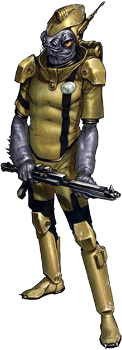

Mon Calamari

Tratti dei Mon Calamari
| Aumento dei punteggi caratteristica | Il punteggio di Carisma aumenta di 2 e l'Intelligenza o la Saggezza aumentano di 1 |
| Eta' | I mon calamari raggiungono la maturita' intorno ai 18 anni e vivono per meno di un secolo |
| Allineamento | Tendente al lato chiaro della forza |
| Taglia | Media |
| Velocita' | 9m |
| Anfibio | Puoi respirare sott'acqua |
| Scurovisione | Vedi 18m attraverso luce fioca come se fosse luce intensa e nell'oscurita' come se fosse luce fioca. Nell'oscurita' non vedi i colori, solo gradazioni di grigio |
| Resistenza dei Mon Calamari | Ottieni vantaggio nei tiri salvezza contro gli effetti di lentezza e sei resistente ai danni da freddo |
| Appassionato di Musica | Sei competente nell'utilizzo di uno strumento musicale a scelta |
| Nuotare | Ottieni velocita' di nuotare 9m |
| Linguaggi | Sai parlare, leggere e scrivere: Galattico Base, Mon Cal ed un linguaggio bonus a piacere |